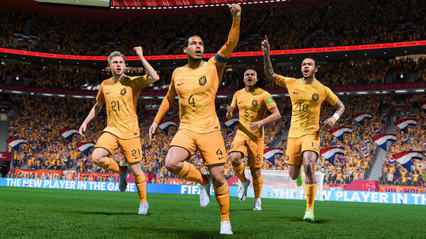
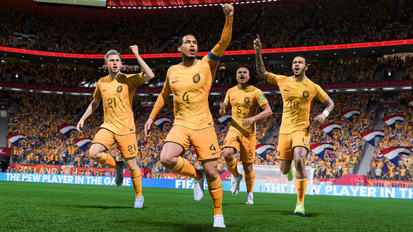

Rating: 7,3
Multiplayer player
Single Player
Online
Genre: Sport
Ontwikkelaar: EA
PEGI 3
Fifa
FIFA 22 is een voetbalsimulatiespel uit de FIFA-computerspellenreeks. Het spel werd uitgebracht op 1 oktober 2021. Net als in FIFA 21 prijkt Kylian Mbappé ook weer op de cover van alle edities. Het spel is verschenen voor Microsoft Windows, Nintendo Switch, PlayStation 4, PlayStation 5, Xbox One en de Xbox Series
FIFA 23 is in veel opzichten best een prima voetbalspel, maar dat komt vooral doordat FIFA 22 dat ook al was. Hoewel FIFA 23 in elk spelonderdeel wel dingen toevoegt en verandert, heb je tijdens het spelen niet het gevoel dat je met een totaal nieuw spel hebt te maken. Datzelfde gaat op bij het doorspelen van de Career Mode of het opbouwen van een team in Ultimate Team, dat uiteraard nog steeds pay-to-win is en zelfs iets beter lijkt te zijn geworden in spelers verleiden om meer pakjes te kopen. Wellicht zit dat je in de weg, wellicht niet en wellicht doet de overheid er de komende jaren iets mee. Het is belangrijk en goed dat er naar gekeken wordt, maar ondertussen is het heel goed mogelijk om je te vermaken met FUT. Er is enorm veel te doen en je kunt op veel manieren proberen spelend - en niet kopend - je team te verbeteren. In de overige modi en in de gameplay zien we kleine verbeteringen en wat nieuwe features, maar in grote lijnen blijf je de game op dezelfde manier spelen. De toevoeging van power shots is grappig en zorgt voor spektakel, maar tegelijk is het jammer dat mede daardoor doelpunten nog goedkoper zijn dan ze in de voorgaande games al waren. Daardoor eindigen veel wedstrijden met hoge scores, en dat is niet zoals dat in het echte voetbal gaat. Dat laatste is misschien wel de hoofdgedachte die we hebben bij FIFA 23: vermakelijk, spectaculair, maar op heel veel manieren niet echt realistisch. Daarmee past de game prima in het laatste rijtje games in deze langlopende serie, waarvan de absolute hoogtijdagen gevoelsmatig al een tijdje achter ons liggen.
 
